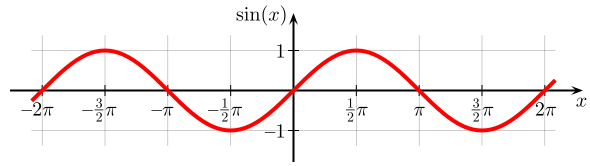

En matemática, el seno es una de las seis funciones trigonométricas, llamadas también funciones circulares; es una función real e impar cuyo dominio es R (el conjunto de los números reales) y cuyo codominio es el intervalo cerrado [−1,1]

Se denota f(x) = sin(x) para todo x∈R. El nombre se abrevia a veces como sen en la forma española y sin en las formas latina e inglesa
El astrónomo y matemático indio Aria Bhatta (476–550 d. C.) estudió el concepto de «seno» con el nombre sánscrito de ardhá-jya,[5] siendo अर्ध ardha: «mitad, medio», y ज्या jya: «cuerda». Cuando los escritores árabes tradujeron estas obras científicas al árabe, se referían a este término como جِيبَ jiba . Sin embargo, en el árabe escrito se omiten las vocales, por lo que el término quedó abreviado jb. Escritores posteriores que no sabían el origen extranjero de la palabra creyeron que jb era la abreviatura de jiab (que quiere decir «bahía», «cavidad» o «seno»).
A finales del siglo XII, el traductor italiano Gerardo de Cremona (1114-1187) tradujo estos escritos del árabe al latín reemplazando el insensato jiab por su contraparte latina sinus (‘hueco, cavidad, bahía, seno’). Luego, ese sinus se convirtió en el español «seno».